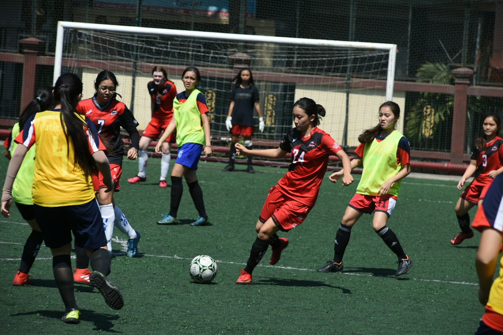
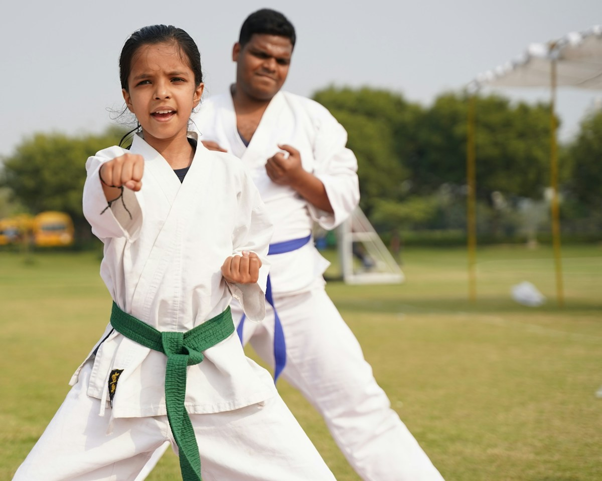

兒童及家庭
01
What We Offer
六個入口，接住六種不同的需要。
每個計劃均按申請人的實際處境評估，並在尊重私隱的前提下提供支援。你可以按需要篩選計劃，或直接與我們聯絡。

兒童及家庭 02
健康支援
03
青年發展
04
青少年義工牛奶計劃自 2021 年起
為了表揚年輕義工的貢獻，協會除提供義工津貼外，更直接資助青少年志願者的營養開銷（提供牛奶）。這既是對義工付出的肯定，也關注成長階段青少年的骨骼與智力營養需求，鼓勵健康生活方式。
加入義工行列
青年發展
05

兒童及家庭 06
所有申請及個人資料均會保密處理。協會會按個別家庭的實際情況、現有支援及需要程度進行評估；遞交申請並不代表自動獲批。如你正處於緊急危險情況，請優先聯絡警方或相關緊急服務。
How It Works
由一通電話開始，讓支援一步步到位。
聯絡或轉介
你可以自行聯絡協會，或經學校、社福機構、醫護人員轉介。我們會先了解家庭狀況及最迫切的需要。
專業評估
由相關專業成員按計劃範圍評估申請，並與申請人討論可行選項、私隱安排及所需文件。
制定支援
落實資助或轉介安排，按需要持續跟進，確保援助真正回應家庭的轉變與復原需要。